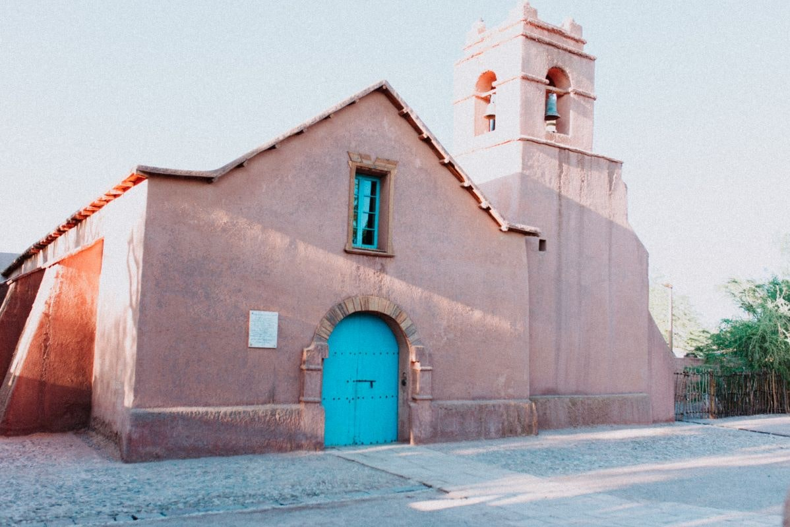
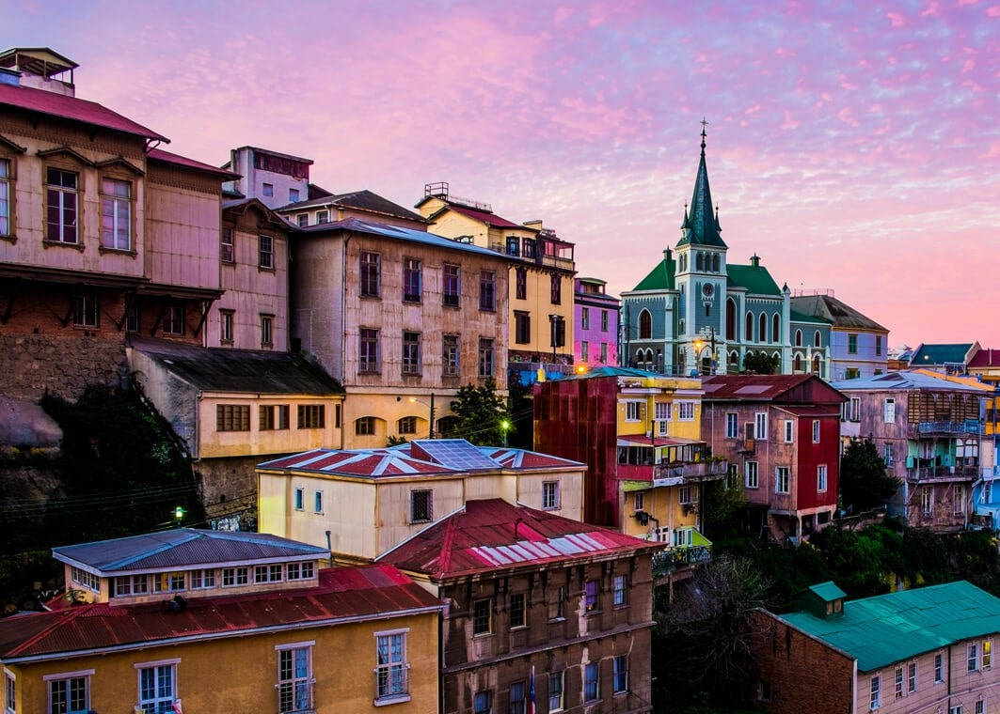
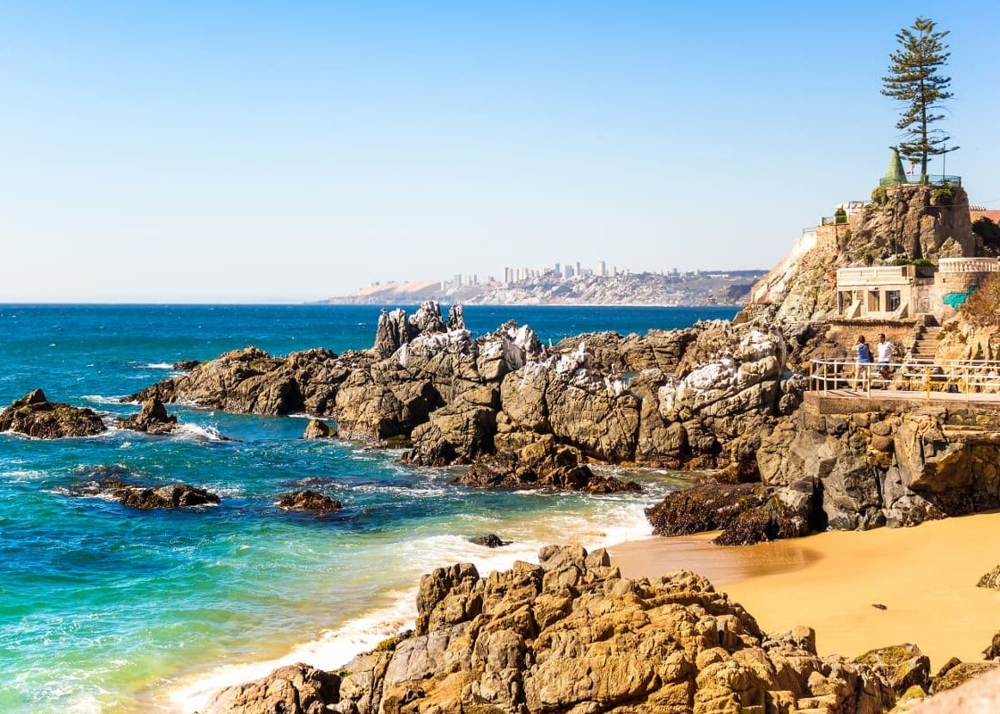

ᑕᕼIᒪᕮ


Ilha de páscoa
A Ilha de Páscoa, conhecida originalmente como Rapa Nui, localizada no hemisfério sul a cerca de 3.700 km da costa do Chile, é um dos lugares mais intrigantes do mundo. Com seus famosos Moais, que atrai atenção e desperta curiosidade sobre a ilha. Isolada no Pacífico-sul, a ilha é um dos territórios habitados mais remotos do mundo, fator que moldou o desenvolvimento de sua sociedade. Os moais (as estátuas esculpidas em rocha vulcânica) foram produzidos pelo povo Rapa Nui entre os séculos XIII e XVI. A maioria foi talhada do vulcão Rano Raraku e transportada por quilômetros até as plataformas cerimoniais Ahu,feito que intriga pesquisadores. Do ponto de vista cultural, os moais estão associados ao culto aos ancestrais, Acredita-se que representavam líderes importantes e funcionavam como símbolos de proteção e prestígio. Evidências indicam que a exploração excessiva de recursos naturais, com o isolamento geográfico, gerando instabilidade antes mesmo do contato europeu. Atualmente, a ilha é reconhecida como Patrimônio Mundial da UNESCO, preservando não apenas seus monumentos, e também sua cultura, que mantém tradições, língua e identidade.




Cidades Famosas
Santiago foi fundada em 1541 pelo conquistador espanhol Pedro de Valdivia. Como capital do país, combina modernidade e história, tendo como destaque turístico o Cerro San Cristóbal, que oferece uma vista panorâmica da cidade e da Cordilheira dos Andes. San Pedro de Atacama tem origens pré-colombianas, mas foi verdadeiramente estabelecida durante o período colonial, no século XVI. É um dos principais destinos turísticos do país, servindo como porta de entrada para o Deserto do Atacama, com atrações como o Valle de la Luna e gêiseres. Valparaíso foi fundada em 1536 e se destaca por seu caráter portuário e cultural. Suas colinas repletas de casas coloridas, elevadores históricos e arte urbana fazem da cidade um importante polo turístico e cultural, reconhecido como Patrimônio Mundial da UNESCO. Viña del Mar foi fundada oficialmente em 1878 e é conhecida como a “Cidade Jardim”. Seu principal atrativo turístico são suas praias e eventos culturais, especialmente o famoso Festival Internacional da Canção de Viña del Mar, que atrai visitantes de todo o mundo.